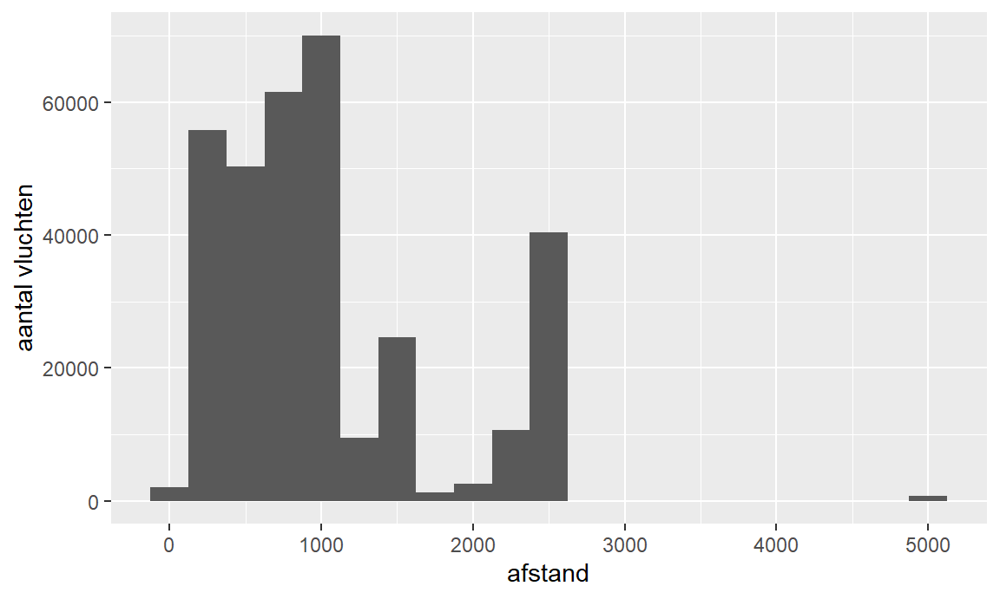
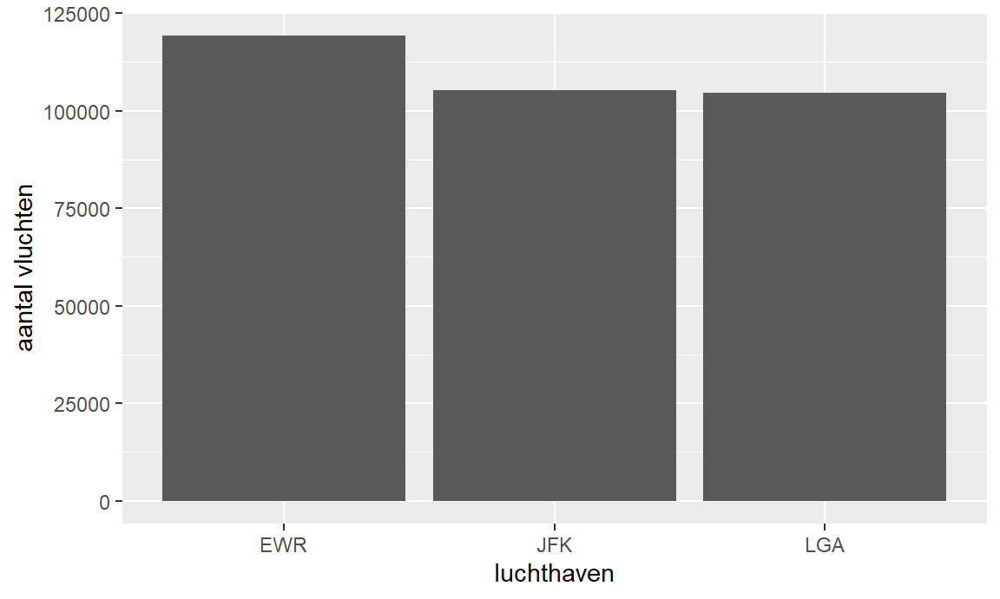
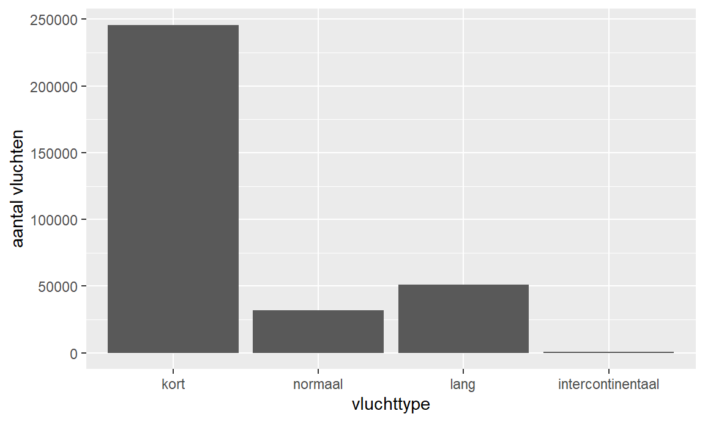
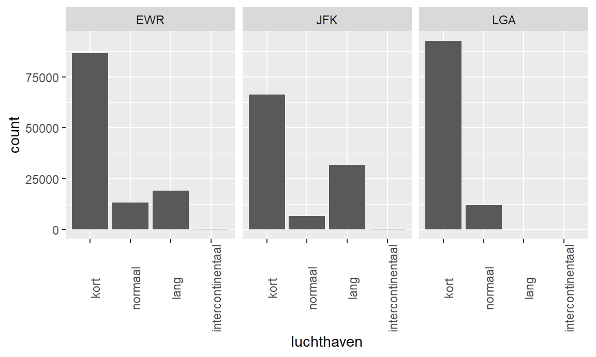
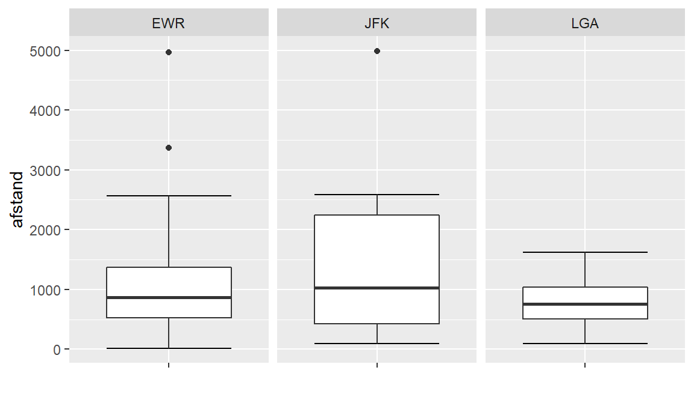
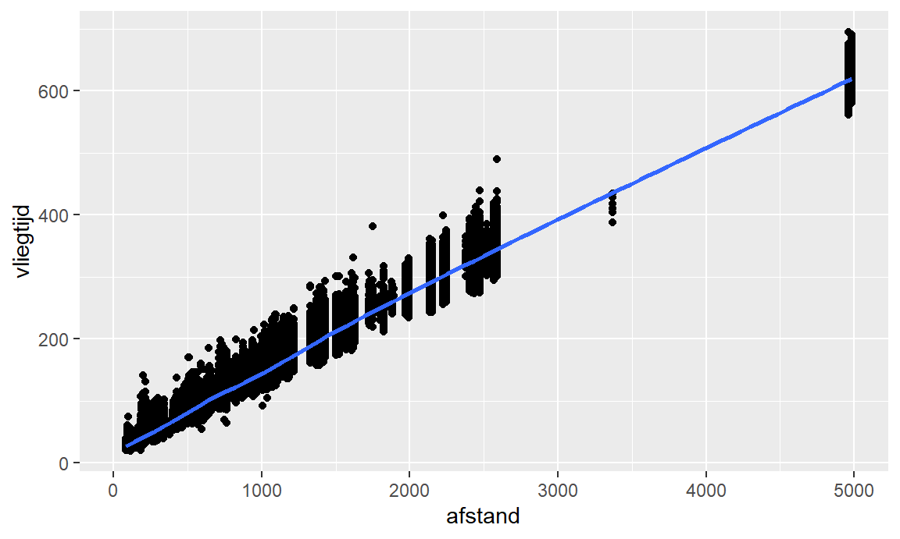
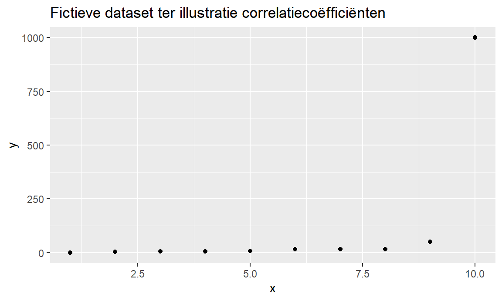

Chapter 4 Descriptieve statistieken
4.1 Beschrijvende statistieken versus exploratieve plots
- Plots zijn vooral sterk om patronen in de data te visualiseren.
- Plots zijn minder geschikt om de ‘sterkte’ of ‘grootte’ van een patroon uit te drukken.
- Beschrijvende statistieken laten dit wel toe aangezien aspecten van de patronen in een exploratieve plot in exacte getallen worden gegoten.
- Er kunnen hoofdzakelijk 3 soorten beschrijvende statistieken worden onderscheiden:
- Centrummaten
- Spreidingsmaten
- Associatiematen
- Centrummaten en spreidingsmaten zijn univariate statistieken en hebben als doel de verdeling van 1 variabele data samen te vatten in 2 cijfers.
- Associatiematen zijn typisch bivariate statistieken en hebben als doel de samenhang tussen twee variabelen samen te vatten.
4.2 Notatie
- \(n\): aantal observaties.
- \(X, Y\): variabelen.
- \(x_i, y_i\): de waarden voor variabelen \(X\) en \(Y\) voor observatie \(i\).
- \(x_{(i)}\): de \(i\)-de waarde voor \(X\) na rangschikking van klein naar groot.
4.3 Data
4.4 Univariate statistieken
4.4.1 Continue variabele

Centrummaten
- Modus
- Vaak minder bruikbaar bij een continue variabelen omdat iedere waarde zeer weinig voorkomt. Bijgevolg zijn er vaak zeer veel modi met telkens slechts enkele observaties.
- Mediaan
- De middelste waarde na rangschikking van de gegevens.
- In geval van een oneven aantal observaties, komt dit overeen met \(x_{\frac{(n+1)}{2}}\).
- In geval van een even aantal observaties zijn er twee ‘middelste’ observaties en is de mediaan gelijk aan \(\frac{1}{2}( x_{\frac{n}{2}}+x_{\frac{n}{2}+1})\)
- De mediaan is robuust tegen uitschieters.
- (Rekenkundig) Gemiddelde
- \(\bar{x} = \frac{1}{n}\sum_{i=1}^n x_i\)
- Het gemiddelde is gevoelig voor uitschieters.
- Dit is de centrummaat die mensen intuïtief selecteren indien mogelijk.
| variabele | gemiddelde | mediaan |
|---|---|---|
| afstand | 1026.98 | 820 |
Spreidingsmaten
- Kwantielen
- Bereik
- Dit is het verschil tussen de grootste en kleinste waarde.
- Zeer gevoelig voor uitschieters.
- Is slechts gebaseerd op 2 observaties en bevat dus weinig informatie. Hiermee bedoelen we dat de spreiding van 2 variabelen sterk kan verschillen terwijl ze toch hetzelfde bereik hebben.
- Interkwartielafstand (IQR)
- Dit is het verschil tussen Q75 en Q25.
- Zelfde principe als het bereik, maar minder gevoelig voor uitschieters.
- IQR is ook slechts gebaseerd op 2 observaties.
- Gemiddelde absolute afwijking (average absolute deviation)
- Dit is de gemiddelde afwijking ten opzichte van het gemiddelde over alle observaties.
- \(\frac{1}{n}\sum_{i=1}^{n}\lvert x_i - \bar{x} \rvert\).
- Variantie
- \(s^2 = \frac{1}{n-1}\sum_{i=1}^{n}(x_i - \bar{x})^2\).
- Vergelijkbaar met gemiddelde absolute afwijking, maar nu wordt het kwadraat gebruikt om te voorkomen dat de verschillen ten opzichte van het gemiddelde elkaar opheffen.
- Vanuit analytisch standpunt is deze spreidingsmaat interessanter (geen absolute waardes, waardoor afgeleiden bijvoorbeeld eenvoudiger worden om te berekenen).
- Wel gevoelig voor uitschieters en door het kwadraat wordt het effect van deze uitschieters ook nog eens vergroot.
- De wortel van de variantie wordt de standaardafwijking genoemd. De standaardafwijking heeft het voordeel dat het indezelfde eenheid uitgedrukt wordt als de oorspronkelijke data.
- Median Absolute Deviation (MAD)
- Dit is de middelste afwijking ten opzichte van de mediaan over alle observaties.
- \(\operatorname{MAD} = \operatorname{median}\left(\ \left| X_{i} - \operatorname{median} (X) \right|\ \right)\).
- Deze maatstaf is robuster tegen outliers.
| variabele | minimum | Q25 | Q50 | Q75 | maximum | bereik | IQR | var | sd |
|---|---|---|---|---|---|---|---|---|---|
| afstand | 17 | 502 | 820 | 1372 | 4983 | 4966 | 870 | 542630.2 | 736.6344 |
4.4.2 Categorische variabele

Frequentietabel
- De absolute frequentie \(f\) geeft aan hoe vaak een waarde voorkomt.
- De relatieve frequentie \(f/n\) geeft aan welk aandeel deze frequentie heeft in het totaal aantal elementen \(n\).
- De cumulatieve frequentie \(F_n(x)\) van een bepaalde waarde \(x\) geeft aan hoeveel observaties kleiner zijn dan of gelijk zijn aan \(x\).
- De cumulatieve relatieve frequentie \(F_n(x)/n\) van een bepaalde waarde \(x\) geeft aan hoeveel percent van de observaties kleiner zijn dan of gelijk zijn aan \(x\).
- Een frequentietabel laat voor alle mogelijke waarden van een categorische variabele de absolute en relatieve frequentie zien (zowel normaal als cumulatief).
- Een frequentietabel laat zien waar een bepaalde waarde zich precies in de verdeling bevindt en hoe uitzonderlijk het is een specifieke waarde in de data te zien (of een waarde groter/kleiner dan) .
| luchthaven | freq | rel_freq | cum_freq | cum_rel_freq |
|---|---|---|---|---|
| EWR | 119282 | 0.36 | 119282 | 0.36 |
| JFK | 105230 | 0.32 | 224512 | 0.68 |
| LGA | 104662 | 0.32 | 329174 | 1.00 |
Centrummaten
- Modus
- Meest voorkomende waarde.
- Enige centrummaat voor nominale variabele.
- Ook bruikbaar voor ordinale variabele.
- Een variabele kan meerdere modi hebben.
- De modus is robuust tegen uitschieters.
- De modus kan je aflezen als de eerste rij in een frequentietabel als je deze ordent van de meest voorkomende tot de minst voorkomende waarde.
- Mediaan
- De middelste waarde na rangschikken van de gegevens.
- Voor ordinale variabelen definiëren we de mediaan aan de hand van de relatieve cumulatieve frequentie. De mediaan is de kleinste waarde waar 50% van de observaties kleiner dan of gelijk aan is.
- De mediaan is robuust tegen uitschieters.
| vluchttype | freq | rel_freq | cum_freq | cum_rel_freq |
|---|---|---|---|---|
| kort | 245666 | 0.75 | 245666 | 0.75 |
| normaal | 31813 | 0.10 | 277479 | 0.85 |
| lang | 50980 | 0.15 | 328459 | 1.00 |
| intercontinentaal | 715 | 0.00 | 329174 | 1.00 |
| variabele | mediaan |
|---|---|
| vluchttype | kort |
Spreidingsmaten
- Kwantielen.
- Kwantielen (of percentielen) zijn gebaseerd op de cumulatieve relatieve frequentie.
- Het p% kwantiel is de kleinste waarde waar p% van de observaties kleiner dan of gelijk aan is.
- Het 50% kwantiel komt overeen met de mediaan.
- Veel voorkomende kwantielen om de spreiding van de data weer te geven zijn het 25% en 75% kwantiel.
| variabele | Q25 | Q50 | Q75 |
|---|---|---|---|
| vluchttype | kort | kort | normaal |
4.5 Bivariate statistieken
4.5.1 Categorisch versus Categorisch

Univariate statistieken per categoriewaarde
- Je toont de relevante centrum- en spreidingsmaten voor de afhankelijke categorische variabele per waarde van de onafhankelijke categorische variabele. Dit is enkel mogelijk indien de afhankelijke categorische variabele ordinaal is, waarbij je minimum, mediaam, maximum en kwantielen kan berekenen.
| luchthaven | variabele | mediaan |
|---|---|---|
| EWR | vluchttype | kort |
| JFK | vluchttype | kort |
| LGA | vluchttype | kort |
| luchthaven | variabele | Q25 | Q50 | Q75 |
|---|---|---|---|---|
| EWR | vluchttype | kort | kort | normaal |
| JFK | vluchttype | kort | kort | lang |
| LGA | vluchttype | kort | kort | kort |
Contingentietabellen
Een andere mogelijkheid is het maken van 2-dimensionale frequentietabellen, ookal contingentietabellen genoemd. Meer info hierover lees je in de tutorial.
4.5.2 Categorisch versus Continu

Univariate statistieken per categoriewaarde
- Je toont de relevante centrum- en spreidingsmaten voor de afhankelijke continue variabele per waarde van de onafhankelijke categorische variabele.
| luchthaven | gemiddelde | mediaan |
|---|---|---|
| EWR | 1049.58 | 872 |
| JFK | 1247.16 | 1028 |
| LGA | 779.84 | 762 |
| luchthaven | var | min | Q25 | Q50 | Q75 | max | bereik | IQR | sd |
|---|---|---|---|---|---|---|---|---|---|
| EWR | 536177.0 | 17 | 529 | 872 | 1372 | 4963 | 4946 | 843 | 732.2411 |
| JFK | 842460.4 | 94 | 425 | 1028 | 2248 | 4983 | 4889 | 1823 | 917.8564 |
| LGA | 138132.3 | 96 | 502 | 762 | 1035 | 1620 | 1524 | 533 | 371.6615 |
Correlatie
- Enkel toepasbaar als de categorische variabele ordinaal is.
- Pearson’s correlatiecoëfficiënt kan je NIET toepassen.
- Spearman rangcorrelatiecoëfficiënt (\(\rho\)).
- Kendall’s rangcorrelatiecoëfficiënt (\(\tau\)) kan theoretisch wel toegepast worden, maar is in de praktijk vaak niet haalbaar.
| variabelenpaar | spearman |
|---|---|
| vluchttype-vliegtijd | 0.76 |
4.5.3 Continu versus Continu

Correlatie
- Covariantie
- \(cov(x,y) = \frac{1}{n-1}\sum_{i=1}^{n}(x_i - \bar(x))(y_i-\bar(y))\).
- Bij een positieve associatie tussen twee variabelen zal de covariantie positief zijn.
- Bij een negatieve associatie tussen twee variabelen zal de covariantie negatief zijn.
- De covariantie is echter afhankelijk van de maateenheid van de variabelen, waardoor ze weinig bruikbaar is om de sterkte van de associatie weer te geven.
- Pearson correlatiecoëfficiënt
- Herschaalt de covariantie naar de schaal \([-1,1]\)
- Laat toe om de sterkte van een associatie te evalueren.
- \(r(x,y) = \frac{cov(x,y)}{s_x s_y}\)
- \(r(x,y) = \frac{\sum_{i=1}^{n}(x_i-\bar{x})(y_i-\bar{y})}{\sqrt{\sum_{i=1}^{n}(x_i-\bar{x})^2 \sum_{i=1}^{n}(y_i-\bar{y})^2}}\)
- Meet lineaire associatie tussen 2 variabelen.
- Twee variabelen kunnen positief geassocieerd zijn, maar in een niet-lineaire wijze, waardoor de correlatiecoëfficiënt naar nul gaat.
- Meest gebruikelijke correlatiecoëfficiënt voor continue variabelen.
- Daarom best altijd samen met een puntenwolk bekijken.
- Spearman’s rangcorrelatiecoëfficiënt.
- Zelfde principe als Pearson’s, maar dan gebaseerd op de rangorde van de waarden in plaats van de waarden zelf.
- \(r_i\): rangorde van waarde \(x_i\). Bijvoorbeeld \(r_i = 4\) betekent dat de waarde \(x_i\) de vierde kleinste waarde is.
- \(s_i\): rangorde van waarde \(y_i\).
- \(\rho(x,y) = \frac{\sum_{i=1}^{n}(r_i-\bar{r})(s_i-\bar{s})}{\sqrt{\sum_{i=1}^{n}(r_i-\bar{r})^2 \sum_{i=1}^{n}(s_i-\bar{s})^2}}\)
- Meet associatie tussen 2 variabelen, dus niet specifiek lineaire associatie.
- Kendall’s correlatiecoëfficiënt
- Ook wel Kendall’s tau genoemd.
- De methode is gebaseerd door alle mogelijke observatieparen \((x_i, y_i)\) en \((x_j,y_j)\) te bestuderen.
- Net als Spearman’s aanpak gebaseerd op rangorde \((r_i, s_i)\) en niet de feitelijke waarden.
- Indien \(r_i > r_j\) en \(s_i > s_j\) (of \(r_i < r_j\) en \(s_i < s_j\)) dan zijn observaties \(i\) en \(j\) concordant.
- Indien \(r_i > r_j\) en \(s_i < s_j\) (of \(r_i < r_j\) en \(s_i > s_j\)) dan zijn observaties \(i\) en \(j\) discordant.
- Notatie: \(C\) en \(D\) zijn respectievelijk het aantal concordante en discordante paren.
- \(\tau = \frac{C-D}{\frac{1}{2}n(n-1)}\)
- Net als Spearman’s correlatiecoëfficiënt, focust Kendall’s tau op de associatie (positief of negatief) en niet specifiek op lineaire associatie.
- Het nadeel van Kendall’s tau is dat je alle observatieparen moet bestuderen en het aantal kan snel exploderen bij veel observaties. Immers het aantal paren is \(\frac{n!}{2!(n-2)!}\). Hierdoor kan je Kendall in de praktijk niet gebruiken als je veel observaties hebt.
| variabelenpaar | pearson | spearman |
|---|---|---|
| afstand-vliegtijd | 0.99 | 0.98 |
Vergelijking correlatiecoëfficiënten
- Rangcorrelatiecoëfficiënten meten associatie, terwijl Pearson correlatiecoëfficiënt lineaire associatie meet!
| x | y |
|---|---|
| 1 | 0.0 |
| 2 | 4.0 |
| 3 | 5.0 |
| 4 | 5.5 |
| 5 | 7.0 |
| 6 | 15.0 |
| 7 | 15.6 |
| 8 | 16.0 |
| 9 | 50.0 |
| 10 | 1000.0 |

| variabelenpaar | pearson | spearman | kendall |
|---|---|---|---|
| x-y | 0.55 | 1 | 1 |
Referenties
- Tekst Beleidsstatistiek: Hoofdstukken 1 en 2 en secties 4.2 en 4.3 (Blackboard)
- Spearman’s rangcorrelatiecoëfficiënt
- Kendall’s rangcorrelatiecoëfficiënt
- Spearman versus Kendall’s correlatiecoëfficiënt